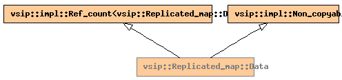

Global Namespace
Inheritance Tree
Inheritance Graph
Name Index
struct
vsip
::
Replicated_map
::Data
File:
../../../vsip/core/parallel/replicated_map.hpp

-
Public Member functions
constructor
Data
(
length_type
np
)
destructor
~Data
()
void
init_ll_pset
()
-
Public Data members
pset_block_type
pset_
impl::par_ll_pset_type
ll_pset_
Generated on Sat Apr 17 11:13:29 2010 by
synopsis
(version 0.12)
 synopsis
synopsis